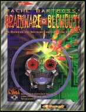

|  | Fiche technique |
| Supplément pour le jeu de rôles Cyberpunk 2020, édité par R. Talsorian Games (1996) | |
| Langue | Anglais |
| Thème | Catalogue Surcouf revu et corrigé |
| Qualité du background | 1 / 5 |
| Qualité des scénarii | - |
| Qualité des règles | 2 / 5 |
| Qualité des illustrations | 3 / 5 |
| Qualité de l'écriture | 2 / 5 |
Ce supplément est consacré exclusivement à la matrice. Il se compose de 3 sections : 30 pages concernant le hardware, 30 de mieux concernant le software, puis une quarantaine pour adapter le jeu de cartes Netrunner à Cyberpunk 2020. Grosse déception, rien de bien nouveau ne vient égayer la matrice : plus de softs, plus de matos, mais une certaine quantité repris de suppléments précédents... Il s'agit juste d'un catalogue laconique desservi par des images noir et blanc de piètre qualité. A l'extrême rigueur, si vous êtes fan de Netrunner CCG et de Cyberpunk, ce supplément aura un quelconque intérêt pour vous. Sinon, vous pouvez vous abstenir sans regret.
{kind=link}